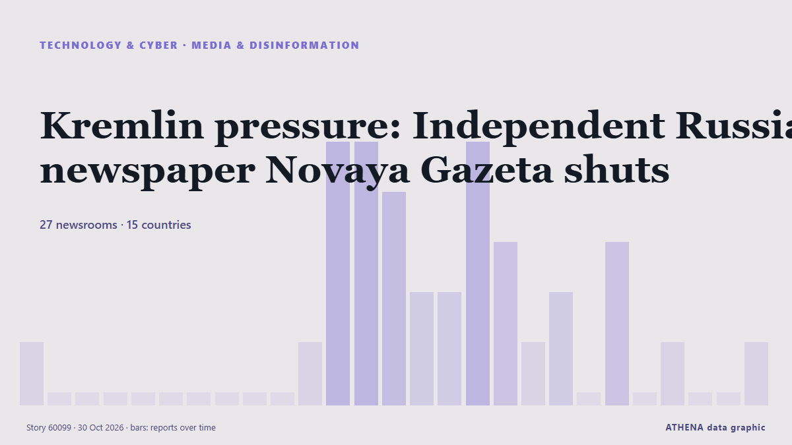

Kremlin pressure: Independent Russian newspaper Novaya Gazeta shuts

Novaya Gazeta will be evicted from its office on Potapovsky Lane in central Moscow, where it has been based for 29 years, the news outlet Ekho reported. από Meduza (English)
Αναφέρθηκε ανεξάρτητα από 27 μέσα σε 15 χώρες από τις 29 Οκτ, πρώτο από το Meduza (English)· η κάλυψη εξασθενεί. Το ATHENA εκτιμά τον κίνδυνο αυξημένο (4.9/10), κυρίως λόγω της σοβαρότητας της βλάβης που περιγράφεται και της γεωγραφικής και τομεακής εμβέλειάς του. Η βεβαιότητα είναι 91% (υψηλή), καθώς το επιβεβαιώνουν 27 ανεξάρτητα μέσα με μέση αξιοπιστία πηγών 79%.
Γιατί έχει σημασία: Οι εξελίξεις στην τεχνολογία και την κυβερνοασφάλεια διαμορφώνουν την ασφάλεια, τον ανταγωνισμό και τους κανόνες της ψηφιακής ζωής.
Τι άλλαξε: 35 νέες αναφορές από 27 μέσα στο 24ωρο έως 30 Οκτ.
Πρώτη διατύπωση: ‘They killed us’: Novaya Gazeta announces closure after more than 30 years
Οι τίτλοι των ειδήσεων παρουσιάζονται στα αγγλικά, όπως δημοσιεύτηκαν.
Με μια ματιά
Επιλέγεται, βαθμολογείται και γράφεται από τη δημοσιευμένη μεθοδολογία του ATHENA. Κανένας συντάκτης δεν παρεμβαίνει σε μεμονωμένα γεγονότα. Πώς παράγεται ›
| 29 Oct 21:14 UTC | 1 |
|---|---|
| 29 Oct 22:14 UTC | 0 |
| 29 Oct 23:14 UTC | 0 |
| 30 Oct 00:14 UTC | 0 |
| 30 Oct 01:14 UTC | 0 |
| 30 Oct 02:14 UTC | 0 |
| 30 Oct 03:14 UTC | 0 |
| 30 Oct 04:14 UTC | 0 |
| 30 Oct 05:14 UTC | 0 |
| 30 Oct 06:14 UTC | 0 |
| 30 Oct 07:14 UTC | 1 |
| 30 Oct 08:14 UTC | 5 |
| 30 Oct 09:14 UTC | 5 |
| 30 Oct 10:14 UTC | 4 |
| 30 Oct 11:14 UTC | 2 |
| 30 Oct 12:14 UTC | 2 |
| 30 Oct 13:14 UTC | 5 |
| 30 Oct 14:14 UTC | 3 |
| 30 Oct 15:14 UTC | 1 |
| 30 Oct 16:14 UTC | 2 |
| 30 Oct 17:14 UTC | 0 |
| 30 Oct 18:14 UTC | 3 |
| 30 Oct 19:14 UTC | 0 |
| 30 Oct 20:14 UTC | 1 |
| 30 Oct 21:14 UTC | 0 |
| 30 Oct 22:14 UTC | 0 |
| 30 Oct 23:14 UTC | 1 |
| 29 Oct 21:29 UTC | 3.8 |
|---|---|
| 30 Oct 08:24 UTC | 3.0 |
| 30 Oct 09:51 UTC | 5.1 |
| 30 Oct 10:08 UTC | 5.5 |
| 30 Oct 12:59 UTC | 5.6 |
| 30 Oct 14:00 UTC | 6.0 |
| 30 Oct 14:25 UTC | 6.3 |
| 30 Oct 18:33 UTC | 5.2 |
| 30 Oct 23:56 UTC | 4.9 |
Γιατί αυτοί οι αριθμοί
Σημασία
Κίνδυνος
Βεβαιότητα
Η κάλυψη — ποιος το ανέφερε και πότε
ο τίτλος όπως δημοσιεύτηκε · ανοίγει το πρωτότυπο- Meduza (English) · Ρωσία · RussiaThe portraits of dead friends are coming off the walls. After 29 years, Russia’s independent Novaya Gazeta newspaper is being forced out of its Moscow newsroom.
- APA (English) · Αζερμπαϊτζάν · AzerbaijanNovaya Gazeta editorial board announces newspaper's closure in Russia
- The Daily Star — page reader · Μπανγκλαντές · BangladeshIndependent Russian newspaper Novaya Gazeta announces closure
- France 24 English · Γαλλία · FranceRussia's bastion of free press Novaya Gazeta shuts down under Kremlin pressure
- The Guardian · Ηνωμένο Βασίλειο · United KingdomRussian society being ‘systematically crushed’ says Novaya Gazeta as newspaper announces closure
- Free Malaysia Today · Μαλαισία · MalaysiaIndependent Russian newspaper Novaya Gazeta announces its closure
- Novaya Gazeta Europe (EN) · Ρωσία · Russia‘They killed us’: Novaya Gazeta announces closure after more than 30 years
- eNCA · Νότια Αφρική · South AfricaIndependent Russian newspaper Novaya Gazeta shuts under Kremlin pressure
- The Straits Times · Σιγκαπούρη · SingaporeRussian independent newspaper Novaya Gazeta forced to close its doors
- The Moscow Times · Ρωσία · RussiaRussia’s Oldest Independent Newspaper, Novaya Gazeta, Announces Closure
- Meduza (English) · Ρωσία · Russia‘They killed us’: Russian independent newspaper Novaya Gazeta announces its closure after decades of repression
- RFE/RL (English) · INT'They Killed Us': Muckraking Russian Newspaper Novaya Gazeta Announces Closure
- Kyiv Post · Ουκρανία · UkraineIndependent Russian Newspaper Novaya Gazeta Shuts Under Kremlin Pressure
- Novinite · Βουλγαρία · BulgariaNovaya Gazeta, Symbol of Independent Russian Journalism, Forced to Close
- Al Jazeera English · Κατάρ · QatarRussia ‘forces’ closure of investigative newspaper Novaya Gazeta
- DW English · Γερμανία · GermanyRussia: Critical newspaper 'Novaya Gazeta' to close
- Ukrainska Pravda (English) · Ουκρανία · Ukraine"We've been killed by secret services": Independent Russian newspaper Novaya Gazeta to close after 30 years
- BBC News · Ηνωμένο Βασίλειο · United KingdomThey strangled us, says founder of Russian newspaper shut under pressure from authorities
- Meduza (English) · Ρωσία · RussiaA statement from from Meduza’s editorial team and fellow journalists in support of Novaya Gazeta
- AzerNews · Αζερμπαϊτζάν · AzerbaijanRussia's Novaya Gazeta announces closure after 33 years, citing state pressure
- Kyiv Independent · Ουκρανία · Ukraine'They killed us' – Pressure from Russian authorities forces closure of Novaya Gazeta
- Rappler · Φιλιππίνες · PhilippinesRussian independent paper Novaya Gazeta finally forced to close its doors
- Human Rights Watch · Ηνωμένες Πολιτείες · United States“They Killed Us”
- Meduza (English) · Ρωσία · Russia‘A big bright lighthouse has been swept away by a murky wave’: Russian journalists, writers, and public figures react to Novaya Gazeta’s closure
- The New York Times (World) · Ηνωμένες Πολιτείες · United StatesRussian News Outlet That Defied Kremlin Will Shut Down: ‘They Killed Us’
- ABC News (International) · Ηνωμένες Πολιτείες · United StatesRussia's top independent newspaper shuts down, blaming pressure from authorities
- Amnesty International · Ηνωμένο Βασίλειο · United KingdomRussia: Closure of Novaya Gazeta is a devastating loss for embattled media freedom
- Euronews English · Γαλλία · FranceRussian independent newspaper Novaya Gazeta says it will shut down following pressure from Kremlin
- CBS News (World) · Ηνωμένες Πολιτείες · United StatesLast independent newspaper in Russia forced to shut down
- Meduza (English) · Ρωσία · RussiaReaders gather outside Novaya Gazeta’s Moscow office after independent Russian newspaper announces closure
- France 24 English · Γαλλία · FranceRussia’s Novaya Gazeta to cease publication amid Kremlin crackdown
- NDTV · Ινδία · IndiaIndependent Russian Newspaper Shuts Down Amid Kremlin Pressure
- Meduza (English) · Ρωσία · RussiaAs Novaya Gazeta, one of Russia’s best-known independent newspapers, is forced to close after 33 years, three former staffers look back on its legacy
- Meduza (English) · Ρωσία · RussiaCan Russia’s independent newspaper Novaya Gazeta rise from the ashes a third time? Editor Sergey Sokolov discusses what comes next.
- The Daily Star — page reader · Μπανγκλαντές · BangladeshKremlin pressure: Independent Russian newspaper Novaya Gazeta shuts
- The Straits Times · Σιγκαπούρη · SingaporeIndependent Russian newspaper Novaya Gazeta shuts under Kremlin pressure